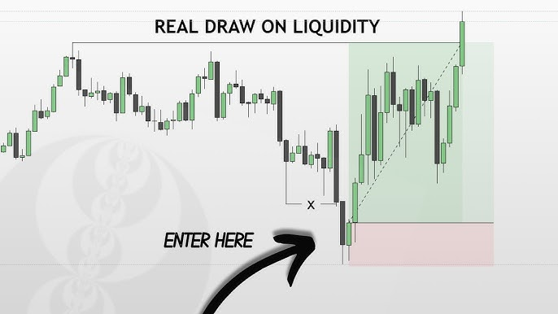
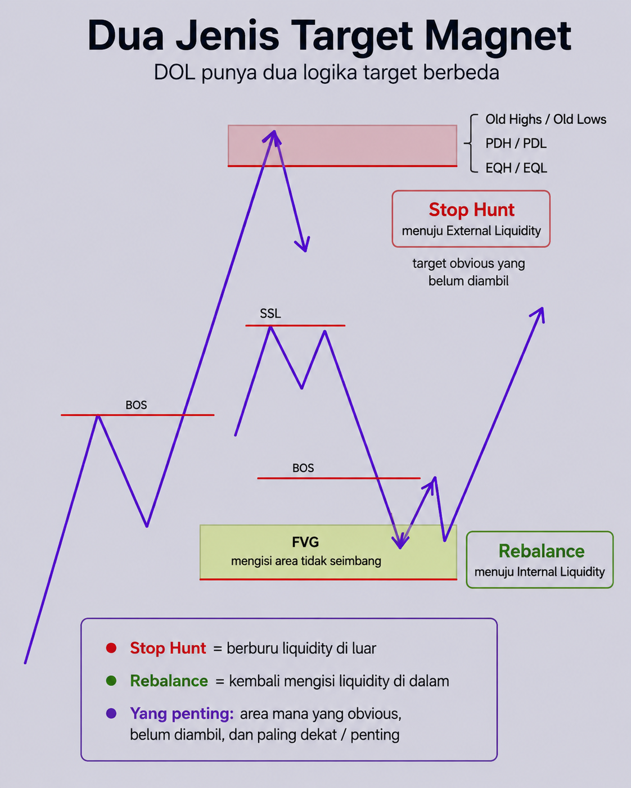

Draw on Liquidity
Draw on Liquidity (DOL) adalah magnet utama ke mana harga akan bergerak. Harga di pasar tidak pernah bergerak acak — ia bergerak layaknya misil pencari panas, tapi yang dicari bukan panas, melainkan likuiditas (Stop Loss trader lain / area ketidakseimbangan harga).
Analogi gampangnya: Bayangkan market seperti orang yang mau mengambil barang di rak. Kadang dia cuma menyentuh rak, kadang mengambil satu barang, dan kadang memborong sampai rak kosong. Sweep, grab, dan run juga seperti itu: bentuknya mirip, tapi niatnya berbeda.
1. Arti Sederhananya
Kalau ada beberapa area liquidity di chart, market tidak selalu tertarik ke semuanya sekaligus. Biasanya ada satu area yang paling logis untuk menjadi target berikutnya. Itulah yang disebut Draw on Liquidity.

2. Dua Jenis Target Magnet
Bukan cuma soal "target di atas" atau "target di bawah" — DOL punya dua jenis logika berbeda:

a) Stop Hunt (menuju External Liquidity) Harga ditarik keluar untuk "berburu" Stop Loss yang terkumpul di area puncak/dasar yang jelas: - Old Highs / Old Lows (puncak-dasar beberapa hari/minggu/bulan lalu) - Previous Day High/Low (PDH/PDL) - Equal Highs / Equal Lows (EQH/EQL) — dua puncak/dasar yang hampir sama tinggi, sering disalahartikan retail sebagai support/resistance "kuat", padahal ini justru target empuk buat Smart Money.
b) Rebalance (menuju Internal Liquidity) Harga ditarik ke "dalam" untuk mengisi area yang pengiriman harganya tidak seimbang/tergesa-gesa: - Fair Value Gap (FVG) — ruang kosong bekas displacement yang belum "diisi ulang".
Bentuk target lain yang juga umum dipakai: swing high, swing low, previous high, previous low. Yang penting bukan namanya, tapi logikanya: - area mana yang masih obvious (jelas terlihat semua orang) - area mana yang belum diambil - area mana yang paling dekat atau paling penting
3. Hierarki DOL — Tidak Semua Likuiditas Setara
Likuiditas di chart Monthly punya daya tarik jauh lebih besar daripada likuiditas di M15. Hierarki ini beroperasi top-down:
| Level | Contoh Target | Fungsi |
|---|---|---|
| Makro (Monthly/Weekly) | Old High/Low, Previous Month/Week High/Low | Menentukan arah utama bulan/minggu |
| Menengah (Daily/4H) | PDH/PDL, Session High/Low | Menentukan profil harian |
| Mikro (1H/15M/5M) | Intraday swing high/low, Trendline liquidity | Target scalping |
Kenapa ini penting: kalau DOL di HTF menunjuk ke atas (misal BSL mingguan), maka semua "break of structure" ke bawah di timeframe kecil kemungkinan besar cuma jebakan (manipulasi) untuk mengambil SSL, sebelum harga sungguhan berangkat ke DOL utama di atas.
Aturan emas: "Dari Eksternal ke Internal, dari Internal ke Eksternal." Begitu harga baru saja menyapu External Liquidity (Old High/Low), DOL berikutnya biasanya bergeser ke Internal Liquidity (FVG terdekat) — begitu seterusnya bergantian.
4. Cara Menentukan DOL Harian (Langkah Praktis)
Menentukan DOL adalah langkah lanjutan setelah kamu menentukan Daily Bias. Kalau bias-nya naik, pertanyaannya: "naik sampai mana?"
- Look Left — geser chart ke kiri, cari hal paling menarik di atas harga saat ini: Old High minggu lalu? FVG Daily besar yang belum terisi?
- Cari titik resistensi terlemah — harga selalu memilih jalur paling sedikit hambatan (path of least resistance), tertarik ke level yang paling dekat dan paling "menggoda".
- Pakai sebagai Take Profit — DOL adalah tempat paling logis untuk taruh TP. Jangan berharap harga naik selamanya; begitu DOL tersentuh, ambil profit.
5. Cara Berlatih
Saat buka chart, biasakan bertanya lima hal ini:
- High penting di mana?
- Low penting di mana?
- Mana yang sudah diambil?
- Mana yang belum diambil?
- Mana yang paling mungkin jadi target berikutnya?
Kalau lima pertanyaan ini bisa dijawab, pembacaan chart kamu akan jauh lebih terarah.
6. Kapan DOL Dipakai Sebagai Filter Entry (Bukan Cuma Target)
DOL nggak cuma buat nentuin TP — juga buat menyaring apakah setup layak dientry:
Valid jika: - Context HTF mendukung arah DOL (bukan cuma pola kecil di LTF) - Harga di area logis: dekat liquidity, POI, premium/discount - Ada displacement bersih setelah area penting disentuh - Entry masih dekat area terbaik, bukan chase harga yang sudah jauh
Invalid jika: - Setup muncul di tengah range tanpa arah jelas - Liquidity sudah diambil tapi tidak ada displacement meyakinkan - POI sudah berkali-kali disentuh (tidak fresh lagi)
7. Kesalahan Pemula yang Perlu Dihindari
- Membaca semua break sebagai perubahan arah. Struktur kecil (mikro) bisa berubah tanpa mengubah struktur besar (makro) — cek dulu hierarki DOL-nya sebelum panik ganti bias.
- Menganggap Equal Highs/Lows sebagai support/resistance kuat — padahal itu justru sinyal "prasmanan likuiditas" buat Smart Money.
- Lupa cek External vs Internal — entry padahal DOL yang lebih besar masih mengarah ke sisi berlawanan.
Kesimpulan Bab
Struktur membantu membaca arah, liquidity (DOL) membantu membaca target. Daily Bias dan DOL adalah dua hal yang tidak terpisahkan: bias kasih kompas (Utara/Selatan), DOL kasih koordinat GPS (titik spesifik yang dituju). Keduanya harus dipakai bersama.
Tugasmu bukan mencari lebih banyak entry, tapi menyaring entry berdasarkan ke mana DOL sebenarnya mengarah — mulai dari skala paling besar (Monthly/Weekly) ke skala paling kecil (M5/M1), bukan sebaliknya.